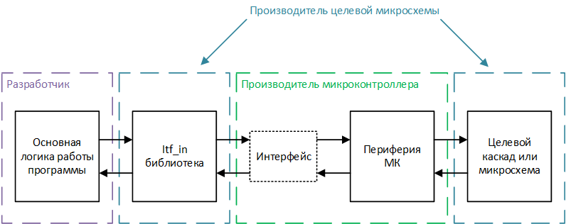

Типы библиотек
Программирование микроконтроллеров начинается с настройки и реализации взаимодействия с периферией (например считывание показаний АЦП, передачи данных по интерфейсам связи или генерации ШИМ-сигнала). Код реализующий непосредственную настройку, а также взаимодействие с периферией мы будем называть "программным обеспечением взаимодействия с аппаратным обеспечением", где под аппаратным обеспечением подразумевается периферия микроконтроллеров, а под взаимодействием ее настройка и реализация обменна данными: записи в регистры и чтения из регистров.
В отдельный тип программного обеспечения для встраиваемых систем можно выделить обработку данных, полученных от периферии, например, различные преобразования (показаний АЦП в определенный физический параметр) или выработку управляющих сигналов (для двигателей в зависимости от измеренного тока или скорости). Данный тип ПО мы будем называть "зависящим от аппаратного обеспечения, но не зависящими от взаимодействия с аппаратным обеспечением. Для объяснения названия рассмотрим пример с обработкой показаний АЦП.
То как АЦП настраивается и как из него получаются данные (из каких регистров они считываются, в каком режиме происходит измерение, используется ли оверсемплинг и так далее) относится в программному обеспечению взаимодействия с аппаратным обеспечением и может отличаться для разных микроконтроллеров и схемотехники печатной платы. С другой стороны для обработки показаний, полученных с АЦП важны: разрядность получаемых от АЦП данных и период опроса, которые в свою очередь выбираются в соответствии с методикой вычисления параметра и будут оставаться одинаковыми для любых микроконтроллеров, на которых это программное обеспечение будет запускаться. Соответственно для вычисление нам не важна реализация взаимодействия, то есть то, как производится настройка периферии и считывание данных, но нам важно наличие конкретной периферии и конкретные значения настройки, то есть ПО данного уровня зависит от аппаратного обеспечения.
Кроме этого существует огромное количество ПО которое принципиально не связано с аппаратным обеспечением (то есть не использует какую-либо периферию). Пример, близкий к "железу": алгоритм вычисления положения объекта в пространстве по углам, полученным от различных датчиков (гироскоп, акселерометр, компас), не обращается к периферии и не генерирует управляющих сигналов, но при этом может быть запущен как на квадракоптере, так и на персональном компьютере для моделирования. Программное обеспечение такого типа мы будем называть "не зависящим от аппаратного обеспечения".
Описанные выше типы являются условными, но по ним можно распределить практически любые элементы ПО. Для каждого описанного типа возможна реализация независимых библиотек, которые мы классифицируем в соответствии с типом программного обеспечения, к которому они относятся: библиотеки независящими от аппаратного обеспечения (hardware independent libraries), библиотеки зависящие от аппаратного обеспечения, но не зависящие от взаимодействия (hardware dependent, interfacing independent libraries) с аппаратным обеспечением - далее itf_in-библиотеки, библиотеки взаимодействия с аппаратным обеспечением (hardware interfacing libraries), далее itf-библиотеки.
Тип библиотеки определяется в соответствии со следующими правилами:
- если в библиотеке есть хотя бы одна функция, реализующая настройку или взаимодействие с каким-либо видом микроконтроллеров, библиотека является hardware interfacing (itf) вне зависимости от объема и остального содержания;
- если в библиотеке есть хотя бы одна функция, реализующая обработку данных от конкретной периферии, но нет функций настройки и взаимодействия с периферией, библиотека является hardware dependent, interfacing independent (itf_in);
- если в библиотеке нет никаких зависимостей от периферии (будь то настройка, взаимодействие или обработка), библиотека является hardware independent.
Наш подход к работе с каждым типом библиотек
Мы не беремся каким-либо образом классифицировать и стандартизировать независящие от аппаратного обеспечения библиотеки, так как они очень распространены и могут быть применены далеко за пределами разработки программного обеспечения для встраиваемых систем.
Нашей основной целью является продвижение идеи itf_in-библиотек и стандартизация их оформления для обеспечения более унифицированного интерфейса взаимодействия между различными целевыми микросхемами - ИС различных видов, которые управляются микроконтроллерами, и микроконтроллерами любых производителей. Для понимания идеи itf_in-библиотек рассмотри простой пример библиотеки, для обмена данными с 3-осевым гироскопом (целевая микросхема).
Обмен данными с гироскопом происходит посредством интерфейса SPI, кроме этого для вывод микроконтроллера из режима сна необходимо подавать логическую единицу на определенную ножку микросхемы, для чего подразумевается использование цифрового выхода микроконтроллера. itf_in библиотеки строятся по следующему принципу:
Во-первых, itf_in-библиотека может быть запущена только на микроконтроллере, имеющим необходимую периферию, для нашего примера микроконтроллер должен либо иметь свободный аппаратный SPI-интерфейс, либо реализовывать программный. Интерфейс SPI должен быть корректно подключен к целевой микросхеме на печатной плате. Один вход-выход микроконтроллера должен быть подключен к ножке управления режимом сна целевой микросхемы. Во-вторых, itf_in-библиотека должна выдвигать требования к настройкам и интерфейсу взаимодействия с периферией микроконтроллера. Для нашего примера требования к настройкам периферии могут представлять требования к настройке интерфейса SPI (скорости обмена данными, вида кадра, и так далее) и требования к настройке ножки микроконтроллера в режим цифрового выхода. Под интерфейсом взаимодействия с периферией подразумевается набор функций, которые имеют заданный заранее формат входных и выходных параметров, и выполняют определенную операцию с периферией. Для нашего примера itf_in может затребовать интерфейс взаимодействия, состоящий из трех функций:
- с одним входным параметром типа int8_t, возвращающая значение типа int8_t. Функция должна отправлять по интерфейсу SPI входной байт и возвращать полученный из интерфейса байт;
- без входных и выходных параметров. Устанавливающая на подключенной к гироскопу ножке микроконтроллера "1". Необходимость представлять даже такую элементарную операцию, как установка установка ножки в "1", в виде отдельной функции, а не макроса, обоснована и описана далее по тексту;
- без входных и выходных параметров. Устанавливающая на подключенной к гироскопу ножке микроконтроллера "0";
На основании выставленный требований, itf_in-библиотека реализует задуманный функционал. itf_in-библиотека может использует интерфейс взаимодействия с периферией для реализации любой, сколь угодно сложной логики обмена данными, например можно реализовать настройку и чтение любых регистров в памяти, а также управлять режимом работы гироскопа. itf_in библиотека использует интерфейс посредством указателей на затребованные функции и соответственно является условно кроссплатформенной, так как может быть запущена на любом микроконтроллере, удовлетворяющем требованиям библиотеки. Правила оформления и использования itf_in библиотек подробно рассматриваются в главе interfacing independent.
Требования по настройке и организации интерфейса взаимодействия с itf_in библиотеками могут быть реализованы непосредственно при разработке программного обеспечения (без выделения в отдельную библиотеку). Кроме этого большое количество производителей микроконтроллеров предоставляют Hardware annotation libraries (HAL) и инструменты графической настройки, которые могут быть также использованы для настройки и организации интерфейса, что может значительно сократить время на разработку. Кроме этого мы предлагаем собственный формат itf-библиотек, который подразумевает разработку библиотеки под каждое конкретное устройство (каждый микроконтроллер на конкретной печатной плате), которая бы реализовывала полный, но не избыточный набор функций, необходимый для использования любых подходящих itf_in библиотек. Мы используем данный формат для внутренней разработки программного обеспечения и не настаиваем на его повсеместном использовании. Подробности о Hople-формате оформления itf-библиотек, можно прочитать в главе hardware interfacing
Преимущества использования itf_in-библиотек
Главная идея itf_in-библиотек повсеместная унификация программного обеспечения для встраиваемых систем, которая может быть полезна всем основным сторонам разработки: производителям микроконтроллеров, производителем целевых микросхем, разработчикам программного обеспечения.
Преимущества для производителей микроконтроллеров
Большинство крупных производителей микроконтроллеров уже сейчас в том или ином виде предоставляют библиотеки надстройки над аппаратным обеспечением (HAL) и инструменты визуальной настройки микроконтроллеров, с помощью которых становится очень просто выполнить требования любых itf_in библиотек, то есть большинство производителей микроконтроллеров уже поддерживают концепцию itf_in-библиотек. Кроме этого, стандартизация itf_in-библиотек позволит сформировать базу методов, которые должны обязательно присутствовать в HAL, что позволит при необходимости расширить уже имеющиеся библиотеки и облегчит разработку библиотек для производителей, которые таковых еще не предоставляют.
Для производителей микросхем
Производители целевых микросхем продумывают то, как именно микроконтроллеры будут обмениваться данными с их устройствами и соответственно могут разрабатывать itf_in-библиотеки для своих ИС. Данные библиотеки могут быть как просто примерами, реализующими настройку и базовое взаимодействие с устройством, так и могут реализовывать полный набор методов для управления микросхемой. Учитывая, что itf_in-библиотеки являются условно кроссплатформенными, разработчики микросхем могут отладить их на любом подходящем микроконтроллере и быть уверенными, что они будут работать везде. Кросплатформенность значительно упростит процесс разработки программного обеспечения уже в итоговых устройствах и сделает микросхему привлекательнее в глазах разработчиков, а значит и потенциальных покупателей.
Для разработчиков программного обеспечения
itf_in-библиотеки значительно упрощают процесс разработки, так как избавляют программистов от необходимости разрабатывать с нуля или переделывать имеющуюся библиотеку из-за отсутствия поддержки конкретного микроконтроллера. Кроме этого разработчики могут не использовать HAL, а разрабатывать свои, более гибкие и удобные под конкретные задачи интерфейсы.
Общая схема взаимодействия модулей показаны на рисунке ниже:
